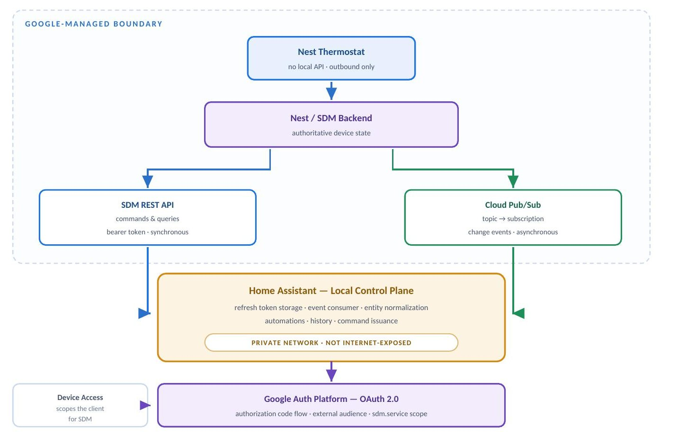
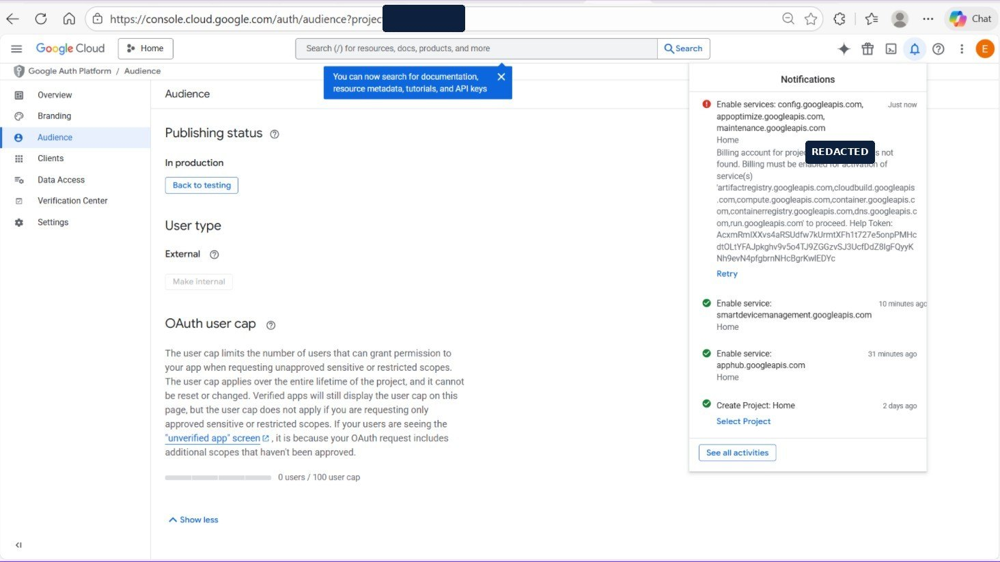
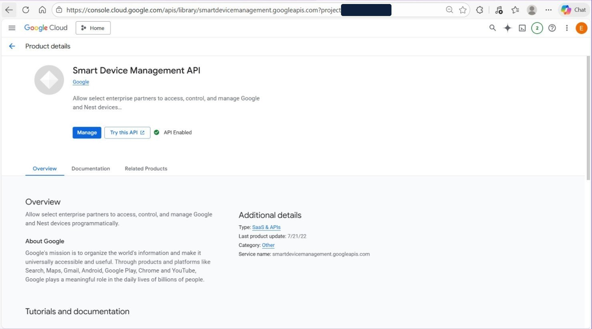
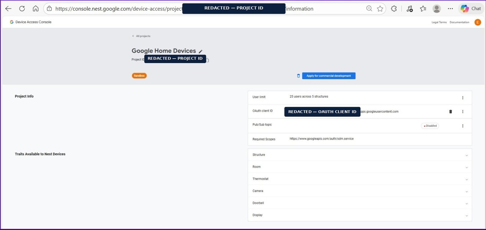
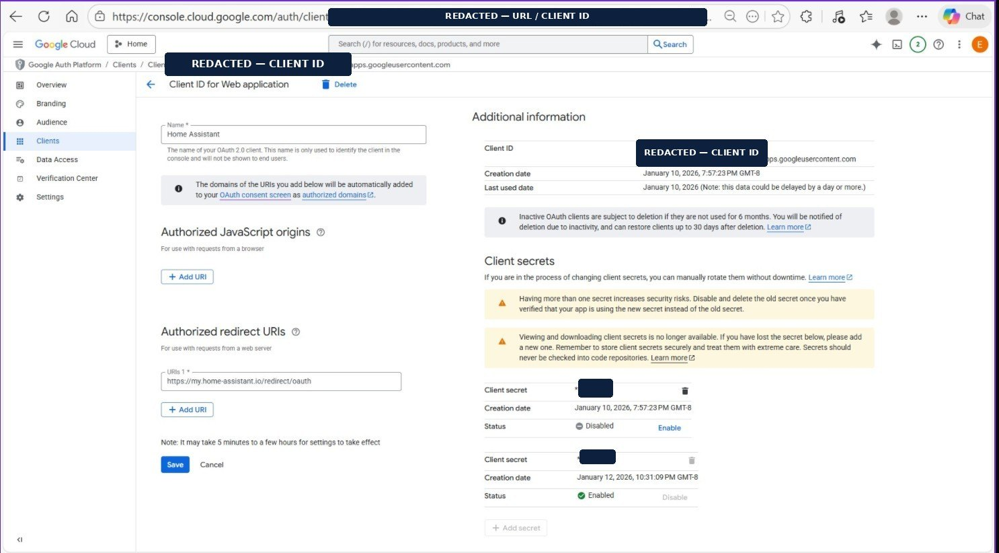
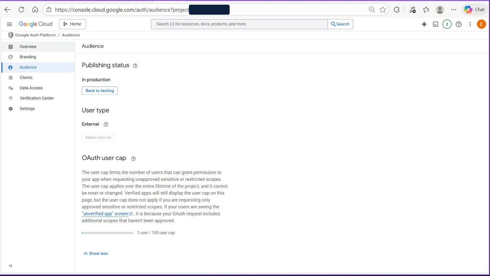
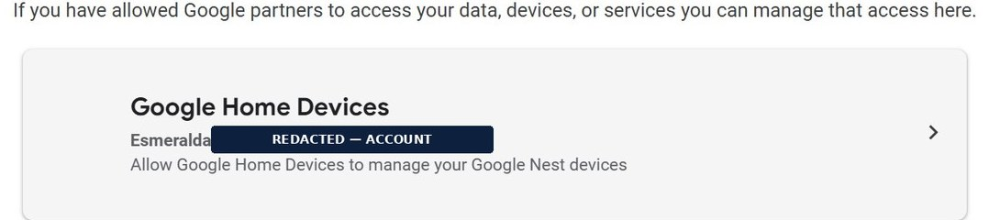
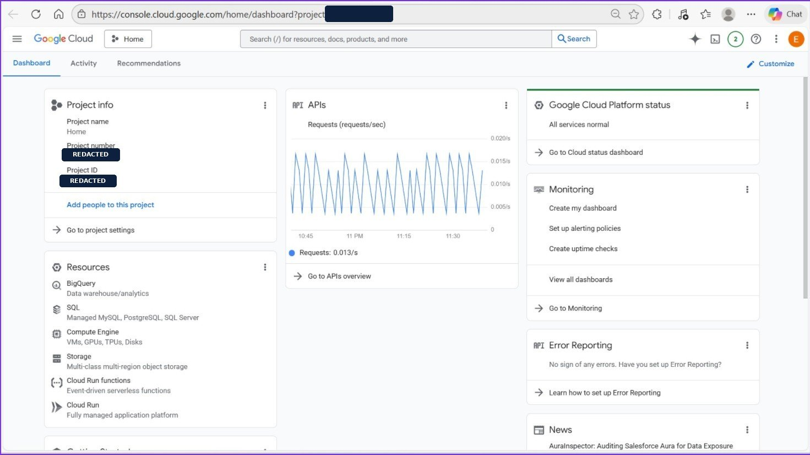
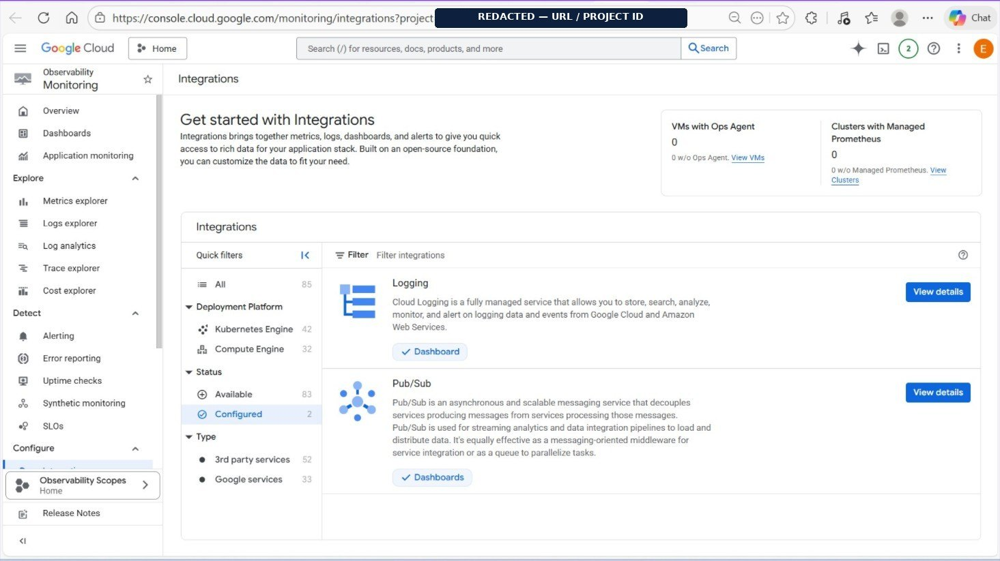
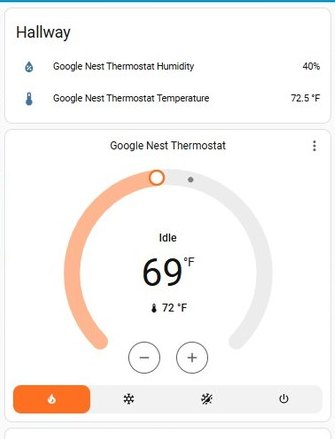

Thesis
A closed device makes this an identity problem
There is no local API to integrate with, so the only sanctioned route runs through someone else's cloud.
A Google Nest Thermostat has no local HTTP API, exposes no LAN control protocol, and will not respond to anything on the home network. It maintains one outbound relationship, to Google's backend. Any platform that wants to read its temperature or change its setpoint must go through Google, as an authenticated third party, on Google's terms.
Those terms have narrowed. The original partner program was retired, leaving the Smart Device Management API as the only supported route to Nest hardware. Access is not granted by pressing a button on the device: it requires enrolling in a developer program, standing up a Cloud project, registering an OAuth client, creating a second project in a separate Device Access Console, and linking the two so a homeowner's consent grant can be exchanged for tokens scoped to their devices.
That alone would be configuration. The engineering problem is structural: the local control plane runs at a private address behind a residential router, and Google's identity platform will not accept a callback it cannot publicly resolve and verify over TLS. The relying party and the identity provider sit on opposite sides of a boundary that OAuth expects to be continuous.
Objectives, fixed before the build
- Establish a dedicated Cloud project as the explicit security, billing and API boundary
- Design an identity layer that grants minimum scope and survives long-lived unattended operation
- Resolve the redirect-boundary conflict without inbound network exposure
- Keep device trust in a separate project from cloud resource management
- Replace polling with an event-driven pipeline delivering changes as they occur
- Stay inside free-tier consumption, with no recurring subscription
- Verify every layer independently, against a live system rather than a mock
- Leave a clean architectural seam for an AI layer that never touches cloud credentials
System
Cloud as broker, not as dependency
Google mediates identity and transport; day-to-day automation logic lives locally.
Six components participate, and assigning each a single non-overlapping responsibility is what keeps the trust chain auditable. The device talks only to Google. Google's backend holds authoritative state and emits change events. The Cloud project is the security, billing and API boundary. The Device Access project is the Nest-specific access control layer. Pub/Sub decouples event production from consumption. The local control plane stores the refresh token, consumes events, normalizes them into entities and issues commands.

| Technology | Layer | Role in this build |
|---|---|---|
| Google Cloud Platform | Foundation | Dedicated project acting as security, billing and API boundary. Every resource is scoped to it |
| Smart Device Management API | Device interface | The authoritative and only supported interface for third-party access to device telemetry, state and control |
| Google Auth Platform | Identity | OAuth 2.0 authorization code flow; external user type promoted to in-production publishing status |
| OAuth web application client | Identity | Represents the control plane as a registered relying party, with an exactly matching redirect URI and a rotatable secret |
| Device Access Console | Device trust | Binds the OAuth client to the device scope and enumerates reachable traits; deliberately separate from cloud resource management |
| Cloud Pub/Sub | Messaging | Topic and subscription carrying device change events, with buffering during consumer downtime |
| Cloud Monitoring & Logging | Observability | Request volume, error conditions and dashboards for the messaging pipeline |
| Home Assistant | Control plane | Self-hosted. Holds credentials, consumes events, normalizes entities and issues authenticated commands |
| Public redirect bridge | Identity bridge | A publicly resolvable TLS endpoint satisfying redirect validation, forwarding the response to the private instance |
Notable for what is absent
There is no compute in this architecture — no VM, no container, no serverless function. No database, no reverse proxy, no tunnel service, no inbound firewall rule. The integration is assembled entirely from managed identity and messaging primitives plus one piece of local software. Every component removed is a component that cannot fail, cost money or require patching.
Two planes over one trust relationship
The control plane runs from the local instance to Google over the REST API with a bearer token: synchronous, request/response, used for setpoint changes and initial state hydration, with user-visible latency. The telemetry plane runs the other way over a Pub/Sub subscription: asynchronous, push-driven, buffering during local downtime, with no request ever issued on a timer. That split is why the integration is classified as Cloud Push rather than Cloud Polling.
Trust
Four links, and none validates the others
A break at any link produces a failure that surfaces somewhere else entirely.
| Link | Relationship | Established by | Symptom if broken |
|---|---|---|---|
| 1 | Cloud project → SDM API | Enabling the service on a billing-enabled project | Tokens are valid, every API call is rejected |
| 2 | Cloud project → OAuth client | A web-application client with an exactly matching redirect URI, external audience, in production | Flow completes on Google's side; no token reaches the relying party |
| 3 | Device Access project → OAuth client | Registering the client ID so Google knows which application may request device scopes | Authorization succeeds; the device list comes back empty |
| 4 | Homeowner → application | An interactive consent grant recorded as a partner connection, exchanged for a refresh token | No partner connection recorded; no device access at all |
Three identities, two consoles, three lifecycles
A frequent point of confusion is that three distinct identities are involved. The Cloud project governs billing, API enablement, messaging resources and quota — it answers which services may be called at all. The OAuth client governs application registration, redirect URIs, the secret and consent audience — which application is asking, and where the answer may be sent. The Device Access project governs the binding of client to scope and the set of reachable traits — which devices this application may see.
Conflating them is the most common cause of an integration that authenticates successfully and then returns no devices. The separation is deliberate rather than incidental: cloud resource management and device authorization have different blast radii, so a change to one cannot silently widen the other, and the Device Access project can be revoked outright without disturbing billing, API enablement or any other resource.
Privilege
Narrow in three dimensions at once
Scope, project and trait are independent controls, and all three must permit an operation.
The integration requests a deliberately narrow permission set. The primary scope authorizes interaction with enrolled devices and nothing else: no mail, files, contacts, location history or profile data. It cannot be widened after the fact without a fresh consent prompt the homeowner would see. A second scope is requested by the setup flow so the event subscription can be created and consumed on the operator's own project.
Underneath the scope sits trait enumeration. The Device Access project lists the categories it exposes — structure, room, thermostat, camera, doorbell, display — and even with a valid token the application can only reach categories the project surfaces, for devices attached during consent.
Why the authorization code flow, and no other
The integration must act on behalf of a specific homeowner, against their specific devices, over a long period, with no human present to re-authenticate. That eliminates the alternatives cleanly.
| Grant type | Verdict | Reasoning |
|---|---|---|
| Client credentials | Rejected | Authenticates an application, not a user. It cannot express "this homeowner consents to this app reaching these devices," which is the entire authorization question |
| Implicit | Rejected | Returns the token through the browser and issues no refresh token. Deprecated, and unusable for unattended long-lived access |
| Device authorization | Rejected | Designed for input-constrained clients. A full browser UI is available during setup, so the indirection buys nothing |
| Authorization code | Selected | User-delegated, exchanges a short-lived code over a back channel, and issues the refresh token that sustains access without further interaction |
The setting that decides whether it still works next month
The application was promoted from testing to in-production publishing status. This is easy to mistake for cosmetic and it is a durability requirement: an external application left in testing issues refresh tokens that expire after seven days, which would silently disconnect the device roughly weekly and demand manual re-authorization every time.
The application remains unverified, which is correct here. Verification is the review process for applications requesting sensitive scopes from the general public; this one has an audience of exactly one, stays far under the hundred-user cap, and the only consequence is an interstitial during the one-time consent flow.
Boundary
The redirect constraint
The architectural crux, and the source of the failure in section 07.
In the authorization code flow the identity provider returns the code by redirecting the browser to a URI registered in advance. Google validates that URI strictly: for a web application client it must be a publicly resolvable HTTPS endpoint, and the value presented at request time must match the registered value exactly. That is a security property, not a limitation — it is what prevents an attacker redirecting an authorization code to a destination they control.
The local control plane, however, runs at a private address. It is not publicly resolvable, has no valid certificate, and is meaningless outside the local network. It can never be registered as an authorized redirect URI. The two requirements are in direct conflict, and there are exactly two ways to resolve it.
| Approach | Trade-off | Verdict |
|---|---|---|
| Public redirect bridge | A stable, publicly resolvable TLS endpoint that satisfies validation and hands the response back to the local instance. Requires no inbound exposure, but routes the callback through a third-party endpoint | Selected |
| Direct callback | Keeps the callback entirely within infrastructure the operator controls, but requires a public hostname with valid TLS — a reverse proxy, certificate management and an inbound firewall rule | Alternative |
The bridge was selected because avoiding inbound exposure was a stated objective. The critical detail — and the one that caused the initial failure — is that it only works if the local instance address it forwards to matches the address actually used during setup. When it does not, Google completes the authorization successfully, the browser lands on the bridge, and the handoff silently fails. Nothing errors on Google's side, because from Google's perspective nothing went wrong.
Credential lifecycle
The authorization code lives for seconds and is stored nowhere. The access token lasts about an hour, in memory. The refresh token is long-lived, in local storage, and is the credential that matters. The client secret persists until rotated, and the OAuth client carries two with distinct lifecycles: an original created at registration, and a replacement created two days later, enabled while the original was disabled.
The ordering matters. Creating the new secret while the old one is still enabled leaves a window in which both are valid, so configuration can be updated and verified before the old credential is withdrawn. Disabling first produces an outage. Credential rotation is universally recommended and rarely performed on personal projects; doing it with correct ordering, and disabling the superseded secret rather than abandoning it, is the point.
Build
Each layer verified independently
Configuration state proves setup. It does not prove the system works, so every layer is confirmed on its own evidence.









Incident
The silent authentication failure
The first authorization attempt failed in the most instructive way possible: it did not error.
The consent screen appeared, the grant was accepted, the browser redirected — and no token ever arrived. No error banner, no log entry pointing at a cause, nothing on Google's side indicating a problem. That silence is diagnostic in itself, because it eliminates most of the search space immediately.
| Hypothesis | Verdict | Reasoning |
|---|---|---|
| Invalid client credentials | Eliminated | The consent screen rendered. Consent is not displayed for an unrecognized client |
| Insufficient scope | Eliminated | The screen listed the requested permission and the grant was accepted |
| API not enabled | Eliminated | Enablement failures occur at call time, after tokens exist. No token was ever issued |
| Device not enrolled | Eliminated | Enrollment problems present as an empty device list after a successful authorization, not as a missing token |
| Redirect boundary mismatch | Root cause | The only failure mode that completes successfully on the identity provider's side and produces nothing on the relying party's side |
The reasoning is structural rather than empirical, which is the part worth carrying forward. Google validates the callback strictly and considers its obligation discharged once it redirects the browser to the registered URI. Whether anything is listening at the other end is not its concern, and not something it can report on.
Resolution
Registering the exact publicly resolvable callback URI on the client, and ensuring the bridge forwards to the same local instance address actually used during setup. The two values must agree: a mismatch in scheme, port, host or trailing slash reproduces the identical silent failure. The incremented user counter is the confirmation that the corrected flow completes.
Failure taxonomy
| Symptom | Link | Root cause | Resolution |
|---|---|---|---|
| Service enablement rejected | 1 | No billing account attached | Attach an active billing account, then retry. Consumption may still be zero |
| API calls rejected despite a valid token | 1 | Device API not enabled on the project | Enable it and confirm on the product page |
| Consent completes, no token arrives | 2 | Redirect mismatch or unreachable callback destination | Register the exact public callback; verify the forwarding target matches the setup address |
| Explicit redirect mismatch error | 2 | Registered URI differs from the one presented | Match byte for byte, including scheme, port and trailing slash |
| Disconnection roughly every seven days | 2 | Application left in testing publishing status | Promote to in-production status |
| Token exchange fails at the final step | 2 | Wrong OAuth client type registered | Use a web application client; other types apply different redirect rules |
| Authorization succeeds, no devices returned | 3 | Client not bound in the Device Access project, or devices not attached during consent | Verify the binding and re-run consent, selecting the devices |
| Previously working integration stops abruptly | 3 | Bound client ID changed | Changing it deauthorizes existing tokens. Re-authorize after any such change |
| Consent lands on the wrong account | 4 | Multiple accounts active in the browser session | Complete the flow in a private window with only the target account signed in |
Time-delayed failure modes
The failures that matter most in an unattended system appear weeks or months after a successful build, when the original context is forgotten. Three apply, and all three share one cause: dormancy. Subscriptions are subject to deletion after a period of inactivity, so the integration fails to start because it looks for a subscription that no longer exists. A refresh token unused for about six months has its authorization revoked — and a deployment living on pushed events while rarely calling the API can go stale while appearing healthy, with events arriving right up until the grant lapses. Inactive OAuth clients are likewise subject to deletion.
None produces a warning. None is visible on a dashboard that shows the system working today. Documenting them at build time is what separates a system that was made to work from one designed to keep working.
Security
Posture and residual risk
Stated plainly, including the parts that are not ideal.
| Control | Effect |
|---|---|
| Scope minimization | A compromised token grants device interaction, not account access — no mail, files, contacts or location history |
| Project separation | Device trust lives in a different project from cloud resources; revoking one does not disturb the other |
| No inbound exposure | The local instance accepts no unsolicited inbound connections. Both cloud paths are outbound-initiated |
| No device credentials locally | Only a delegated OAuth refresh token, revocable by the homeowner at any time |
| Independent revocation | Access can be withdrawn from the partner connections page without touching either developer console |
| Secret rotation | Rotated with overlap, superseded credential disabled rather than left active |
| Minimal attack surface | No compute, no database, no reverse proxy, no open ports. Two configured services in the entire project |
Residual risk
The redirect bridge. A third party sits in the callback path during one-time setup. It forwards in the browser rather than server-side and is not involved in steady-state operation, but the trade-off was accepted knowingly in exchange for not exposing the local instance inbound.
Local credential storage. The refresh token and client secret live in configuration on the local host, so their security is that host's security. This is inherent to a self-hosted control plane rather than a flaw in the integration, but it makes host hardening, patching and backup encryption load-bearing controls rather than optional hygiene.
Unverified application status. Appropriate for an audience of one, imposing only a consent-time interstitial. It would not be appropriate if the application were ever distributed, and the hundred-user cap is a hard technical boundary on that, not merely a policy one.
Operations
Zero cost, and an observability gap
Real-time capability inside free-tier allowances, and an honest account of what is not yet monitored.
Enrolment in the device access program carries a one-time registration fee, and that is the only unavoidable cost. A billing account must be attached to provision messaging and the device API, but attachment is mandatory while consumption is not. At the observed volume — roughly 34,000 requests a month, with device event messages on the order of one to two kilobytes — monthly message throughput sits well under 100 MB against a 10 GiB free allowance.
Observable, not monitored
Four signals cover the question "is it still working?": the API request rate, error reporting, messaging dashboards, and entity freshness in the control plane. All four are being collected. None of them currently pages anyone.
Three alerting policies would close that: request rate falling to zero over a multi-hour window, unacknowledged message count growing past a small threshold, and subscription age approaching the inactivity horizon. For a residential thermostat the current position is reasonable — the failure is visible on a dashboard and the consequence is inconvenience. It is recorded because the distinction between observable and monitored matters far more in production, and the gap should be named rather than glossed over.
Next
An agent that holds no credentials
The delivered system produces the substrate an autonomous layer needs. The design question is what to withhold from it.
What was built is more valuable than a controllable thermostat: a normalized, event-driven, authenticated representation of a physical environment, on hardware the operator controls. The next phase places an AI agent above it as an orchestration layer.
The single most important decision is what the agent is not given. No cloud credentials, no tokens, no client secrets, no direct API access. It interacts exclusively with the local control plane, consuming normalized state and issuing intent-based actions that the control plane executes through its existing authenticated pipeline.
The tempting shortcut is direct API access: fewer moving parts, feels more capable. It is strictly worse on every axis that matters — duplicated credential storage, a bypassed audit trail, coupling to a vendor-specific schema, and a widened blast radius around the component whose behaviour is least predictable. Constraining the agent costs nothing in capability and leaves the established security model completely intact.
| Guardrail | Purpose |
|---|---|
| Absolute setpoint bounds | Hard minimum and maximum enforced by the control plane. No reasoning path can produce a target outside the safe range |
| Rate limiting | A floor on the interval between changes, preventing oscillation and protecting equipment from short-cycling |
| Confirmation for high-impact actions | Large deviations or extended schedule changes require explicit approval rather than executing autonomously |
| Dry-run mode | The agent proposes without executing during an evaluation period, so its judgement can be assessed before it is trusted |
| Full audit log | Every action recorded with its reasoning, enabling retrospective review |
| Manual override precedence | A human adjustment always wins and suspends agent control for a defined window |
| Objective | State | Evidence |
|---|---|---|
| Dedicated Cloud project as security and billing boundary | Delivered | Billing enforcement and minimal footprint |
| Device API enabled as the authoritative interface | Delivered | Enablement event and product page confirmation |
| Identity layer durable for unattended operation | Delivered | In-production status and registered client |
| Redirect boundary conflict resolved | Delivered | Registered redirect URI; user counter increment |
| Device trust isolated in a separate project | Delivered | Client binding, scope and traits |
| Polling replaced with event-driven messaging | Delivered | Messaging configured; request profile |
| Zero recurring cost | Delivered | All consumption within free-tier allowances |
| Alerting policies | Open | Signals collected; no policy defined yet |
| AI orchestration layer | Specified | Architecture, capability model and guardrails defined |